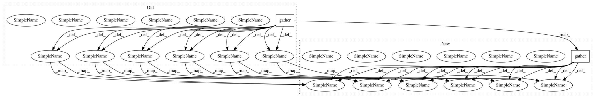

3f277c18dee8a6470cdda8a397ce71f56dabdc9e,Losses.py,,loss_HardNet,#,15
Before Change
idxs = torch.randperm(anchor.size()[0]).long()
min_neg = dist_without_min_on_diag.gather(1,idxs.view(-1,1))
if anchor_swap:
min_neg2 = torch.t(dist_without_min_on_diag.gather(0,idxs.view(-1,1)))
min_neg = torch.min(min_neg,min_neg2)
min_neg = torch.t(min_neg).squeeze(0)
else:
print ("Unknown batch reduce mode. Try min, average or random")
sys.exit(1)
if loss_type == "triplet_margin":
loss = torch.clamp(margin + pos - min_neg, min=0.0)
elif loss_type == "softmax":
exp_pos = torch.exp(2.0 - pos);
exp_den = exp_pos + torch.exp(2.0 - min_neg) + eps;
loss = - torch.log( exp_pos / exp_den )
elif loss_type == "contrastive":
loss = torch.clamp(margin - min_neg, min=0.0) + pos;
else:
print ("Unknown loss type. Try triplet_margin, softmax or contrastive")
sys.exit(1)
After Change
idxs = torch.autograd.Variable(torch.randperm(anchor.size()[0]).long()).cuda()
min_neg = dist_without_min_on_diag.gather(1,idxs.view(-1,1))
if anchor_swap:
min_neg2 = torch.t(dist_without_min_on_diag).gather(1,idxs.view(-1,1))
min_neg = torch.min(min_neg,min_neg2)
min_neg = torch.t(min_neg).squeeze(0)
else:
print ("Unknown batch reduce mode. Try min, average or random")
sys.exit(1)
if loss_type == "triplet_margin":
loss = torch.clamp(margin + pos - min_neg, min=0.0)
elif loss_type == "softmax":
exp_pos = torch.exp(2.0 - pos);
exp_den = exp_pos + torch.exp(2.0 - min_neg) + eps;
loss = - torch.log( exp_pos / exp_den )
elif loss_type == "contrastive":
loss = torch.clamp(margin - min_neg, min=0.0) + pos;
else:
print ("Unknown loss type. Try triplet_margin, softmax or contrastive")
sys.exit(1)
In pattern: SUPERPATTERN
Frequency: 3
Non-data size: 2
Instances
Project Name: DagnyT/hardnet
Commit Name: 3f277c18dee8a6470cdda8a397ce71f56dabdc9e
Time: 2017-07-25
Author: ducha.aiki@gmail.com
File Name: Losses.py
Class Name:
Method Name: loss_HardNet
Project Name: THUNLP-MT/THUMT
Commit Name: e154784a5c7617aca525372186600c31a894cc09
Time: 2018-04-11
Author: playinf@stu.xmu.edu.cn
File Name: thumt/models/transformer.py
Class Name:
Method Name: encoding_graph
Project Name: THUNLP-MT/THUMT
Commit Name: e154784a5c7617aca525372186600c31a894cc09
Time: 2018-04-11
Author: playinf@stu.xmu.edu.cn
File Name: thumt/models/transformer.py
Class Name:
Method Name: decoding_graph